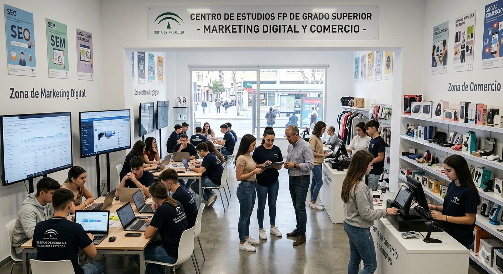
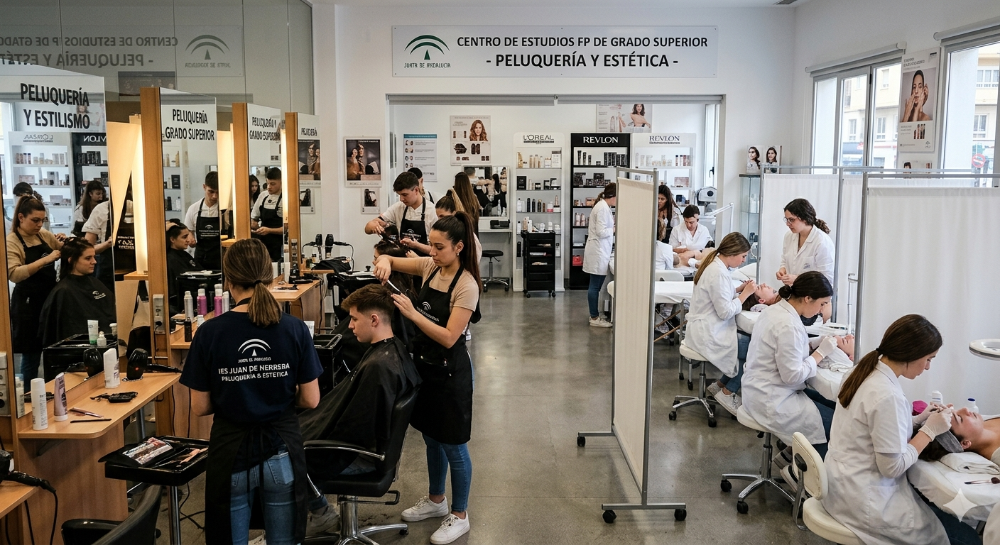
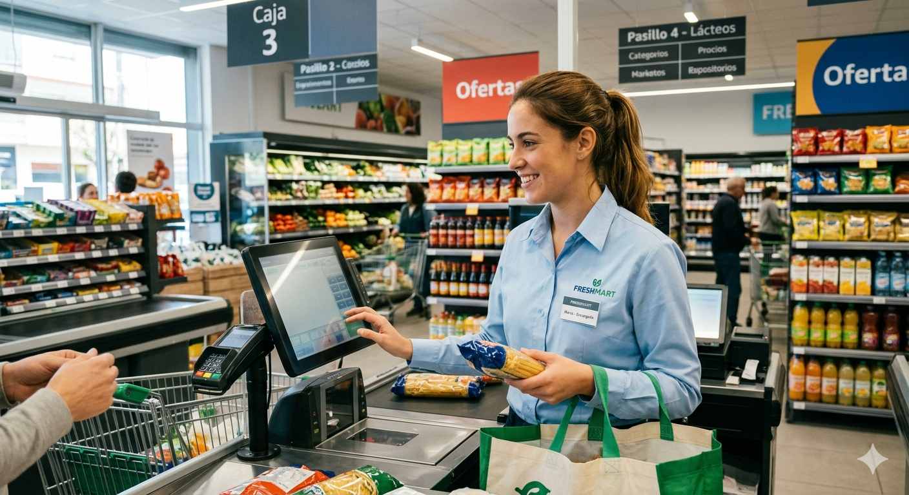
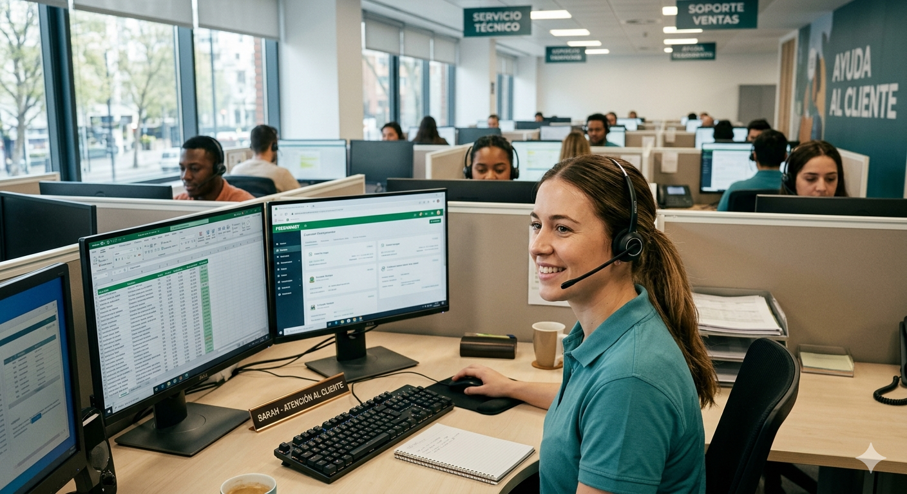

Datos Personales
Nombre: Patricia Aparicio
lugar de nacimiento: Jerez de la Frontera,Cadiz, España
Formación Académica
Jaen,Sevilla

Curso Formativo de Acceso a Grado Superior en Marketing Digital y Comercio,cursando actualmente
Community Manager y Redes Sociales
Fotografía y edición digital.(GIMP, Illustrator, Canva,WordPress)
Edición de video.(Premiere y herramientas online y móviles)
Grado Superior en Peluqueria y Estetica

Competencias Profesionales
Marketing y Comunicación
Gestión de Redes Sociales
Creación de contenido digital
Comunicación de marca
Branding y campañas en redes.
Herramientas Digitales
Canva,Illustrator,GIMP,WordPress Herramientas de Inteligencia Artificial aplicadas al marketinG
Aficiones
Musica, lectura y edicion de videos.
Mi Trayectoria Profesional

Responsable de Sección y Coordinación (Covirán y supermercados varios, Jaén | 1998 – 2018): Gestión de inventarios y proveedores,optimización de procesos internos, y coordinación y liderazgo de equipos de trabajo
Atención al Cliente y Backoffice (Teleperformance, ICCS, Konecta, Sevilla | 2018 – 2021): Gestión integral de clientes en telecomunicaciones y servicios,resolución de incidencias con CRM, y mejora de la experiencia de usuario
